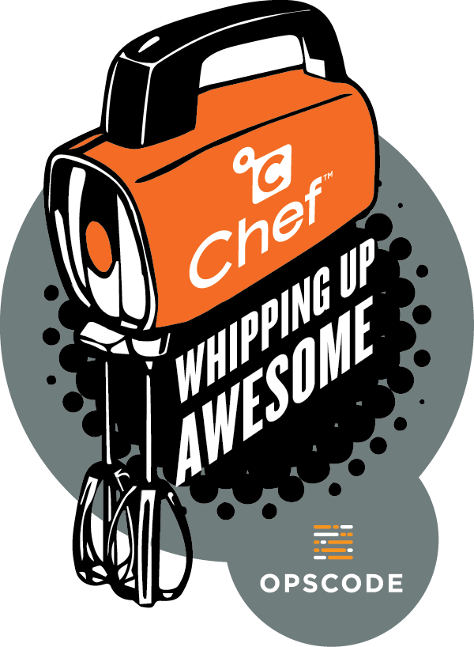

Chef in Practice
 The Introduction to Chef showed information about Chef and creating a first cookbook.
Here we are going to look at a few things to think about while doing your Chef development.
Generating new cookbooks
There are several aspects of a creating a new cookbook that are tedious and repetitive. To improve this experience there is the chef generate cookbook y_cookbook_name command. This will give you great, fully functional cookbook code that does nothing. This is not a bad thing, it just may not be the exact starting point you want for yourself or your team.
Using a cookbook generator you can change the license of the cookbook, set your name and email address as the author and/or use completely different templates for things like the .kitchen.yml file.
Making your own Chef Resources
After creating a few cookbooks you'll find you want increased functionality from Handlers or more robust resources.
A Custom Resource (before Chef Client version 12.5 these were built as Light Weight Resource Providers (LWRPs) or Heavy Weight Resource Providers (HWRPs)). LWRPs and HWRPs were mostly a collection of boiler plate code to create your own pieces of functionality in a Chef recipe.
Thankfully this process has been streamlined with Custom Resources. So if you are currently running a version of the chef-client that older than 12.5, consider this another reason to upgrade (beyond the security reasons you should be upgrading the client...). The result of creating your own Custom Resource is instead of using package 'apache2' do ... end you could create adobe_installer 'apache2' do ... end instead. And inside my code, all the necessary proxies and internal package mirroring locations would be defined. Now the other Chefs at work just need to know to use adobe_installer and all the proxy and mirroring information will be handled for them.
Handling events
Handlers are custom code that runs at the end of your chef-client runs. You can have separate handlers for errors or successful chef-client runs. This is often a place where you are likely to drop down in to pure Ruby code and start sending alerts or emails depending on what happened during the node's converge.
My team runs the chef-client every 20 minutes and we have a rather stable environment, so the vast majority of Chef runs do nothing. Therefore, we have Handlers in place that whenever a chef-client converges and a resource does change we send output of the changed resource to a room in Slack to confirm that our change has rolled out across our fleet.
Run your own Supermarket
Sharing the cookbooks you have created with your co-workers can be difficult. Well it used to be, Berkshelf made it easy for them to pull a cookbook down from a Git repo or local file path. That works great from the command line, but is not as easy to consume as a human. So the Chef Supermarket was created. And then people wanted to start running their own Supermarket's to share their own cookbooks privately. So the on-premise or private Supermarket installation process was created.
Update your Berksfile to point to your internal Supermarket and easily consumer and share your cookbooks across your company.
The Supermarket is not the only method available to do this sharing, others including JFrog's Artifactory have replicated the /universe endpoint used by Berkshelf to pull down cookbook dependencies from an artifact repo.
Pay attention to your Chef server key files
They are not to be shared and the Organization ones you don't want to regenerate except in a disaster recovery situation.
Ideally, the only "user" with write access to your Organization is going to be your Continuous Integration (CI) server. Upon testing and validation the change to a cookbook, the CI server will do the the knife cookbook upload xyz command for you.
What is a Chef server Organization?
A way to group and isolate cookbooks needed for a project or app. A Chef server Organization has its own security key files and cookbooks. The combination of the Organization key file and your user key files allows authorizes your interaction with the Chef server's APIs (upload cookbook, register client machine, etc).
NEVER PUT A CHEF KEY IN TO SOURCE CONTROL!
In your .gitingore file add a line with .chef
Don't store secrets in plain text either
Speaking of keeping secrets out of source control - you'd never put your SSL cert in source control.
How to handle secret server config values you need to get on to the server but cannot put in to source control?
Data bags - think of them as name/value pairs you upload to the server and they're available to the Chef clients when needed w/o being stored in the cookbook that everyone can see. BUT!!! Data bags are stored in clear text and viewable on the Chef server web interface.
Encrypted data bags - just like regular data bags, but require an extra file that is the key to lock and unlock the data back contents. Like mentioned above, the SSL cert needs to be in an encrypted data bag.
Encrypted data bags are not the only method to store secrets for Chef cookbooks. Please read Secrets Management and Chef by Noah Kantrowitz. A top notch summary of available options for managing secrets in Chef cookbooks and when the strengths of one is better than the other.
Workout
We are going to complete the following actions
- Update our local machine to use a custom cookbook generator.
Add this to whatever yourchef gem install chef-flavor-panknife.rbyou are currently using
And finally - we can generate a new cookbook by running# only load ChefGen::Flavors if we're being called from the ChefDK CLI if defined?(ChefDK::CLI) require 'chef_gen/flavors' chefdk.generator_cookbook = ChefGen::Flavors.path endchef generate cookbook atb_chefconf_2017 - Repeat steps 6-12 of the Chef workout exactly as written, including
'and" - Run
foodcriticagainst our new cookbook - Correct any issues that may be reported
- Run
cookstyleagainst our new cookbook - Again, correct any issues that may be reported
- Converge the node with Test Kitchen
kitchen converge